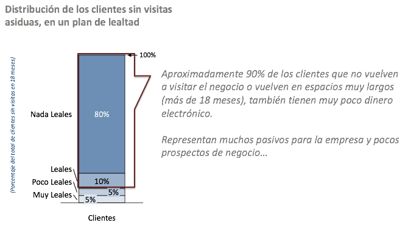
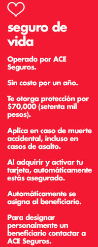

Propósito
En este estudio se equematiza un potencial producto para planes de lealtad en la industria de las ventas al menudeo (retail). El producto tiene el beneficio directo de mejorar el balance de la empresa, reduciendo el pásivo inherente en todo plan de lealtad estilo “dinero electrónico” o “monedero”.
Problema de Mercado
- Los programas de lealtad se han vuelto una necesidad de negocio, particularmente con las generaciones más nuevas (1), por lo que eliminarlos es una opción poco viable desde el punto de vista de negocio.
- Sin embargo, los planes de lealtad generan costos importantes de administración que compiten por recursos de la empresa.
- El manejo de los pásivos generados a travéz de estos programas puede ser complejo y difícil.
- El riesgo para el negocio es grande: el cobro del pásivo por un ente externo legal (autoridad fiscal) o de los mismos clientes, puede poner en peligro el modelo de negocio.
~ | Curvas de mercado
Generalmente, en productos de lealtad, pocos clientes hacen uso extensivo del programa. Aunado a ello, si la entrada es relativamente barata, duplican su existencia en el padrón. Esto significa que una cantidad importante de clientes no están obteniendo beneficios directos de la empresa, pero si generan un pásivo importante en los libros.

Claramente, es deseable reducir los beneficios en el segmento menos redituable o incrementarlos costos administrativos en el segmento más alto (con el fin de reducir los pasivos).

Además de generar pocos beneficios, la experiencia de estos programas indican que muchos clientes no regresan asiduamente al negocio. La regla de dedo para considerar a un cliente como pérdido es de 18 meses sin transacción, lo que representa en muchos negocios hasta el 90% de sus afiliados:

Propuesta de Producto
El producto propuesto consiste de un seguro de accidentes colectivo sin participación del asegurado y de plazo corto. El componente colectivo asegura que el contratante, en cuyo caso puede ser la empresa emisora del programa de lealtad (2), pueda eventualmente obtener un beneficio secundario por la buena siniestralidad esperada.
El uso del producto (en este caso una tarjeta de lealtad) se traduce en un pago hacia la prima, iniciando el periodo de cobertura relativamente corto de 60 a 120 días (dependiendo del costo por asegurar). En algunos casos, esto es renovable con cada compra, pero no de manera acumulativa.
El rango y cobertura limitada permite cobrar una prima muy baja, que es descontada de los beneficios virtuales obtenidos por el tarjetahabiente.
Las implicaciones de un mecánismo de retorno deben ser consideradas desde un punto de vista legal: por ejemplo que a pesar de que el seguro no es participativo individualmente, el dividendo pueda ser pagada a favor del contratante colectivo, en este caso la empresa emisora del programa de lealtad.
En este sentido, el producto sería ofrecido a los mejores clientes, que generan pásivos desproporcionadamente pero que potencialmente también están más atentos a los beneficios.
Casos de éxito
~ | Farmacias Benavides
En México, Farmacias Benavides ya ofrece un seguro de vida integral por muerte accidental en su tier más alto (platino). El seguro esta prominentemente en vista en su sitio de promoción de su tarjeta de beneficios:

La estrategía de la empresa consiste primero en segmentar a sus clientes, ofreciendo peldaños de servicio diferenciados: lo que garantiza una mejor distribución de los beneficios y los pásivos hacia los clientes que más generan ingresos.
Segundo, un tercero provee la poliza y el servicio, desligando a la empresa de inconvenientes legales.
La suma asegurada es de $70 mil pesos;
La Aseguradora pagará la Suma Asegurada correspondiente a esta cobertura, si el Asegurado fallece a consecuencia de un Accidente cubierto dentro de los noventa (90) días siguientes a la fecha del mismo
El contrato completo se puede ver aquí (3).
Aquí se puede ver otra tríptico informativo:

Canales de ganancias adicionales
Además del obvio manejo de pásivos, por medio de un esquema de seguros y la potencial mejora en lealtad, la información generada por los planes de lealtad puede representar una fuente adicional de ingresos.
Tipícamente, todos los esquemas de compensación de lealtad están basados en transacciones: el cliente compra o hace algo a cambio de puntos.
Con la tecnología, esto significa que la transaccionalidad es fácilmente minada para encontrar importantes datos de comportamiento del consumidor. Una tienda de autoservicio en Inglaterra (4) encontró un cliente en las compañias de seguros, al venderles la información recabada en sus transacciones. La empresa de seguros, a su vez, usó la información para contactar a clientes potenciales con precios muy bajos (por ejemplo, los de bajo riesgo, que compran productos saludables).
Aun y cuando existen debates éticos de estos programas, lo cierto es que se trata de una situación provechosa para todos: el supermercado obtuvo un canal adicional de ingresos, la aseguradora un cliente de muy bajo riesgo y el cliente un seguro más barato.
En México, la Ley Federal de Protección de Datos Personales en Posesión de los Particulares (LFPDPPP) prohíbe algunos de estas negociaciones. Sin embargo, dada la desasociación pertinente del individuo, es posible vender paquetes de información agregada, que también serían de utilidad para aseguradoras, tales como hábitos de consumor por zonas geográficas o tipos de características de clientes.
Fuentes
Notas
-
Estudios revelan que hasta 70% de jóvenes (millenials) estarían dispuestos a abandonar una empresa que retire sus planes de lealtad basados en recompensas. ↩
-
El uso de este tipo de productos es común, aunque se rige en algunas ocasiones bajo criterios diferentes. ↩
-
También está disponible un micrositio aquí: http://www.acegroup.com/mx-es/microsites/datos-del-seguro.aspx ↩